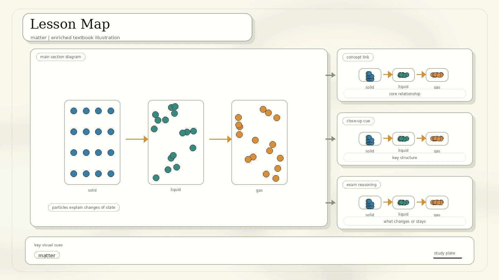
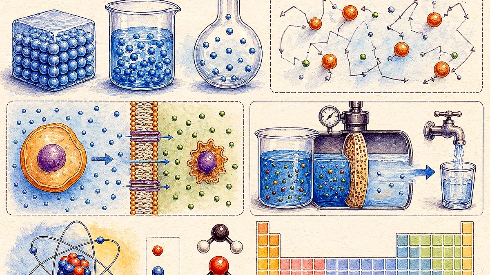
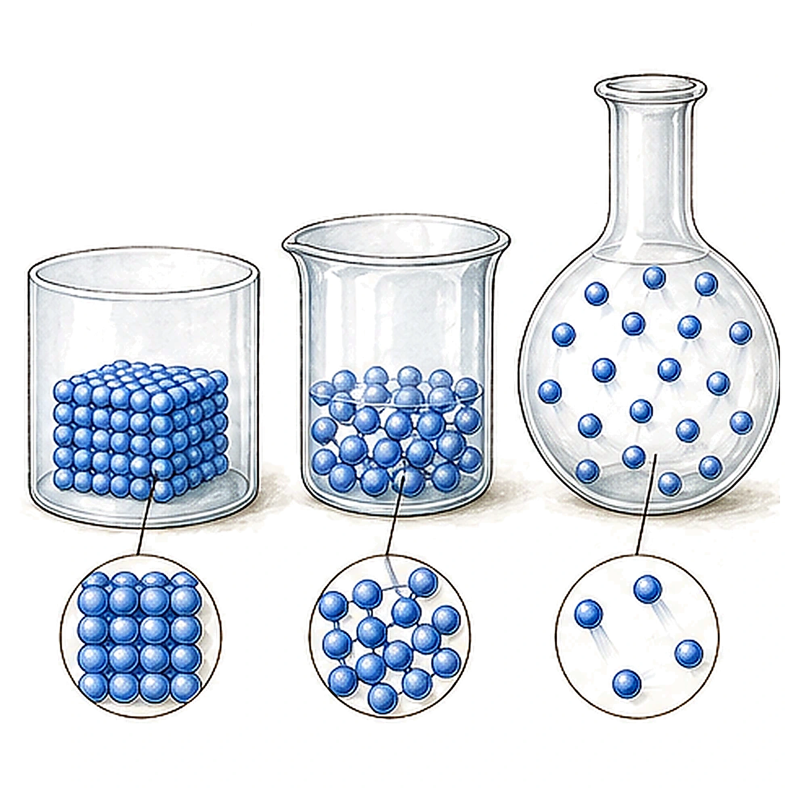
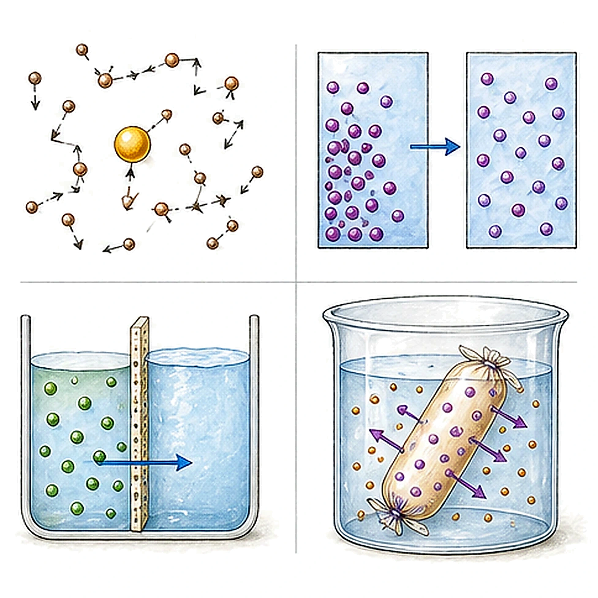
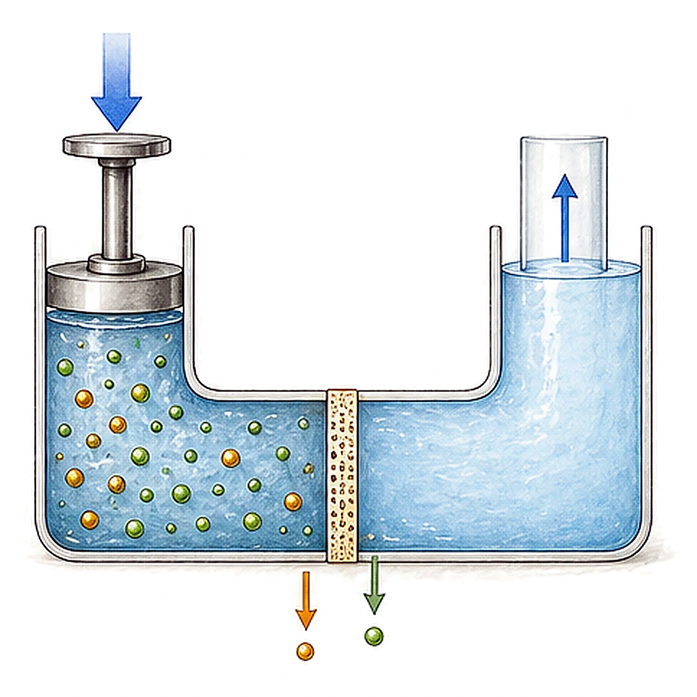
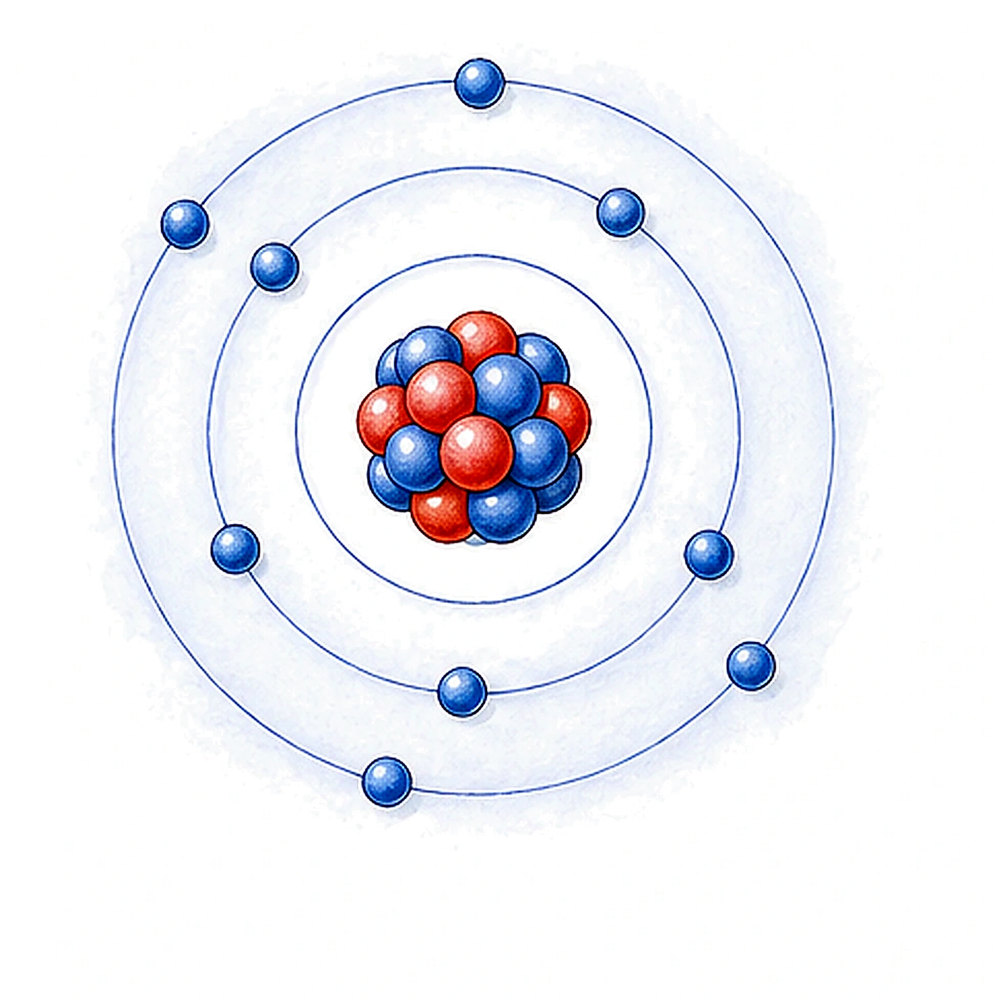
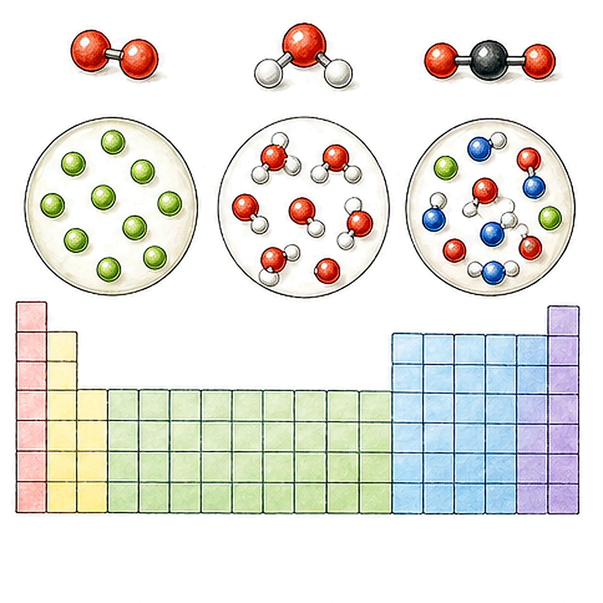
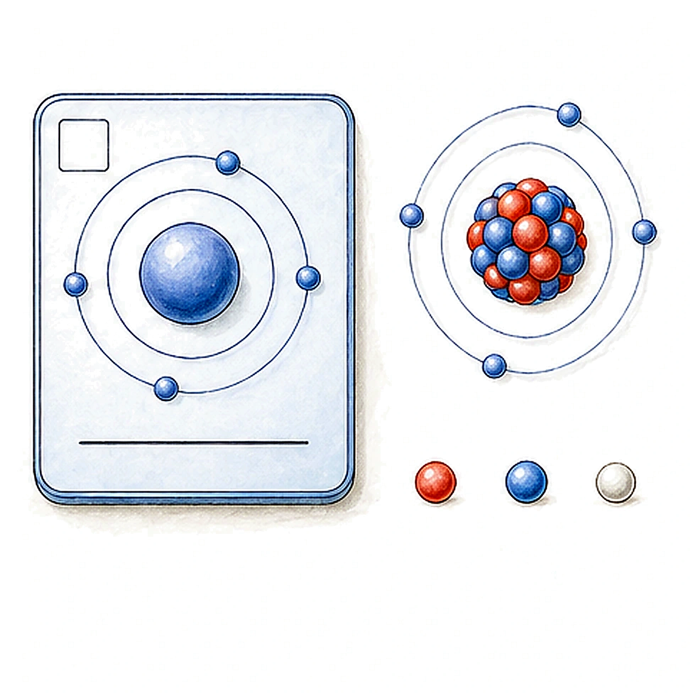

Lesson Map
The original lesson overview lists five focus areas: particle theory, states of matter, diffusion/osmosis/dialysis, subatomic structure, and chemical composition of matter.

Matter is made of tiny particles that are constantly moving.
Particle arrangement and energy explain solids, liquids, gases, plasma, and other states.
Random particle motion causes spreading, water movement, and separation by membranes.
Atoms contain protons, neutrons, and electrons.
Matter can be classified into elements, compounds, and mixtures.
Particulate Nature Of Matter
Matter is any substance that has mass and takes up space, meaning it has volume. Everyday objects that can be touched are ultimately composed of atoms, and atoms themselves are made of interacting subatomic particles.

Anything with mass and volume. Air is matter too, even when it cannot be seen.
Matter consists of many very small discrete particles.
Particles are constantly moving because they have kinetic energy.
The particles may be atoms, molecules, or ions.
History Of Particle Theory
The PDF includes a video activity and a timeline of particle models.
| Time | Scientist | Idea or experiment result | Model or meaning |
|---|---|---|---|
| About 2500 years ago | Leucippus and Democritus | Matter is composed of tiny particles, which they named atoms. | Atom meant uncuttable or indivisible. The scan gives the simple example that cheese would be made of cheese atoms. |
| Nineteenth century | John Dalton | Atoms of a specific element are identical in mass and properties; atoms combine to form compounds. | Chemical reactions happen because atoms are rearranged. |
| 1870s-1890s | J. J. Thomson | Discovery of electrons. | Plum pudding model of the atom. |
| 1909 | Ernest Rutherford | Evidence showed the atom's positive charge is concentrated in a small region. | The dense central region is the nucleus. |
| 1911 | Niels Bohr | Modelled electrons in a structured atom, especially using hydrogen. | Planetary model. |
| 1920s | Werner Heisenberg | Uncertainty principle and quantum view of electron behavior. | Quantum theory: orbital and electron cloud model. |
Video reference shown in the scan: https://www.youtube.com/watch?v=fhnDxFdkzZs
Matter, Energy, And States Of Matter
Conservation Laws
- Law of conservation of mass: mass is neither created nor destroyed in chemical reactions.
- Conservation of energy: energy can neither be created nor destroyed.
- Energy can be transferred from one form to another.
- All forms of energy are either potential energy or kinetic energy.
- Potential energy is stored energy; kinetic energy is energy in motion.
- The speed of particle movement depends on the amount of energy the particles have and the state of matter.

Solid, Liquid, And Gas Particle Model
| Property | Solids | Liquids | Gases |
|---|---|---|---|
| Particle arrangement | Closely packed in an ordered arrangement. | Loosely arranged but still close together. | Not arranged in any fixed way. |
| Particle movement | Vibrate about fixed positions. | Move quite fast and slide past each other. | Move freely and rapidly in all directions. |
| Space between particles | Small spaces. | Small spaces, but larger than in a solid. | Very large spaces. |
| Forces of attraction | Very strong; forces hold particles together. | Weaker than in a solid; particles are not held in fixed places. | Weakest; particles move about freely. |
| Shape and volume | Fixed shape and fixed volume. | Fixed volume, takes the shape of the container. | No fixed shape or volume; fills the container. |
Mercury example from the scan: mercury is a solid below about -39 deg C, a liquid between about -39 deg C and 357 deg C, and a gas above about 357 deg C.
Plasma And Other States
Plasma is an ionized, high-energy state of matter. The lesson uses plasma displays, fluorescent lamps, neon signs, plasma globes, lightning, the magnetosphere, solar wind, stars, and space media as examples. It also notes that the plasma lamp was invented by Nikola Tesla.
Plasma displays, TV screens, fluorescent lamps, neon signs, plasma balls, and plasma globes.
Lightning, plasma in Earth's magnetosphere, and the polar wind or plasma fountain.
Stars heated by nuclear fusion, interplanetary medium, intergalactic medium, and interstellar medium.
A low-temperature state that forms close to absolute zero.
Some liquids near absolute zero have zero viscosity, meaning they flow without friction. Helium becomes superfluid below the lambda temperature, about 2.17 K.
The scan names plasma and degenerate matter as examples.
Only certain substances show this state. Cholesteryl benzoate has two melting points: at 145.5 deg C it becomes a cloudy liquid, and at 178.5 deg C it becomes clear.
Sublimation And Deposition
Sublimation is a change from solid directly to gas. Deposition is a change from gas directly to solid. The PDF shows dry ice/carbon dioxide, iodine, and ammonium chloride.
Brownian Motion, Diffusion, Osmosis, And Dialysis
Brownian Motion
Brownian motion is the random motion of particles suspended in a medium, such as a liquid or a gas. It is named after the botanist Robert Brown, who described the motion in 1827 while observing pollen of Clarkia pulchella immersed in water.
Diffusion can be understood as the visible, large-scale result of random particle motion at the microscopic level.

Key Definitions
Movement of particles from a region of higher concentration to a region of lower concentration.
Movement of solvent molecules, usually water, through a semipermeable membrane from a less concentrated solution into a more concentrated one.
Separation of molecules in solution by differences in their rates of diffusion through a semipermeable membrane.
Particles move randomly due to their natural kinetic energy. Diffusion and osmosis occur in living and nonliving systems.
Rate Of Diffusion
The scan highlights two factors that increase diffusion rate:
Solute, Solvent, And Solution
A solution forms when a solute dissolves in a solvent.
| Term | Meaning | Salt-water example |
|---|---|---|
| Solute | The substance being dissolved. | Salt |
| Solvent | The substance that dissolves the solute. | Water |
| Solution | The mixture formed after dissolving. | Salt water |
The PDF asks: is a solution a compound or a mixture, and is it homogeneous or heterogeneous? A solution is a homogeneous mixture, because the substances are physically combined and evenly distributed rather than chemically bonded in a fixed ratio.
Reverse Osmosis And Desalination Plants
Reverse osmosis uses applied pressure to push water through a semipermeable membrane in the opposite direction from ordinary osmosis. Water molecules pass through, while many dissolved salts and impurities are left behind.

Seawater undergoes a two-stage mechanical filtration to remove coarse and fine particles.
Filtration removes impurities, microorganisms, and bacteria of smaller sizes.
Pre-treated seawater is pumped at high pressure through semipermeable membranes. Only water molecules pass through at this stage.
Water is disinfected, remineralised, and made potable with chemicals such as chlorine and fluoride.
PUB reference printed in the scan: https://www.pub.gov.sg/watersupply/fournationaltaps/desalinatedwater/tsdp
Atoms And Subatomic Structure
The lesson moves from Dalton's model to the modern idea that atoms contain smaller particles. More than 99.94% of an atom's mass is in the nucleus.
- Protons have a positive electric charge.
- Electrons have a negative electric charge.
- Neutrons have no electric charge.
- If the number of protons equals the number of electrons, the atom is electrically neutral.
- If those numbers are different, the atom is positively or negatively charged.
- The number of protons defines which chemical element the atom represents.

Subatomic Particles
| Location | Particle | Symbol | Relative charge | Relative mass |
|---|---|---|---|---|
| Inside the nucleus | Proton | p | +1 | 1 |
| Inside the nucleus | Neutron | n | 0 | 1 |
| Outside the nucleus | Electron | e | -1 | 1/1840 |
Proton Number And Nucleon Number
- Proton number is also called the atomic number and is represented by Z.
- Nucleon number is also called the mass number and is represented by A.
- Neutron number is represented by N.
- For a neutral atom, atomic number = number of protons = number of electrons.
- Mass number = number of protons + number of neutrons.
Helium example: helium-4 has mass number 4, atomic number 2, and neutron number 2.
Isotopes
Isotopes are atoms of the same element with the same number of protons but different numbers of neutrons. Because the proton number stays the same, isotopes are still the same element.
Chemical Composition And The Periodic Table
Chemical composition means the chemical components that make up a substance. According to chemical composition, matter can be classified as elements or non-elements; the non-elements discussed here are compounds and mixtures.

A pure substance that cannot be broken down into two or more simpler substances by chemical processes.
A substance formed when atoms of two or more elements are chemically combined.
A physical combination of substances. A solution is a homogeneous mixture.
A rearrangement of atoms. Physical changes involve no rearrangement of atoms, so the composition of molecules does not change.
Physical Properties
Physical properties are qualities of a material that can be detected using our five senses or a measuring device.
Chemical Symbols Of Elements
- Each symbol may consist of one or two letters.
- The first letter is always capitalized.
- The second letter, when present, is lowercase.
Element Classification
Elements are often classified by metallic and non-metallic properties and by their physical state at room temperature.
Periodic Table
Scientists have classified all known elements into the periodic table. The periodic table arranges elements by atomic number, electron configuration, and recurring chemical properties. A periodic-table tile gives the atomic number, chemical symbol, chemical name, and relative atomic mass.

The atomic number is the number of protons. It defines what chemical element the atom represents. For example, atomic/proton number 9 identifies fluorine.
The scan asks students to find copper, silver, and gold on the periodic table: copper is Cu, atomic number 29; silver is Ag, atomic number 47; gold is Au, atomic number 79.
Periodic Table Practice From The PDF
Review And Source References
Check Yourself
- Explain why air is matter even though it is invisible.
- Compare the particle arrangement and motion in solids, liquids, and gases.
- State what happens during melting, freezing, boiling, condensation, sublimation, and deposition.
- Explain why diffusion is faster at higher temperature.
- Describe the difference between diffusion, osmosis, and dialysis.
- Explain how reverse osmosis is used in desalination.
- Use proton number, nucleon number, and neutron number in A = Z + N.
- Use the periodic table to identify an element by atomic number, symbol, or relative atomic mass.
Video And Activity Links Printed In The Scan
- Particle theory:
https://www.youtube.com/watch?v=fhnDxFdkzZs - Matter/particle theory:
https://www.youtube.com/watch?v=94tReSbyPYc - Diffusion simulation:
https://phet.colorado.edu/sims/html/diffusion/latest/diffusion_en.html - Dalton's playhouse:
https://www.visionlearning.com/library/animations/daltons_playhouse/ - Atomic structure:
https://www.youtube.com/watch?v=ukGLH_NrFH8 - Discovery of periodic table:
https://www.youtube.com/watch?v=O-48znAg7VE - Discovery of periodic table:
https://www.youtube.com/watch?v=fPnwBITSmgU - Overview of periodic table:
https://www.youtube.com/watch?v=uPkEGAHo78o - Physics:
https://www.youtube.com/watch?v=TTHazQeM8v8 - Electricity:
https://www.youtube.com/watch?v=ru032Mfsfjg
Rebuilt from the week 2 scanned PDF, IMG_20260427_0002.pdf. The duplicate diffusion/osmosis scan page was consolidated so the content appears once.